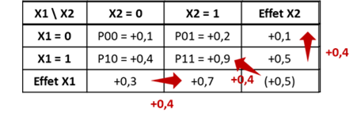

Chapter 4 La question des échelles
4.1 Mesures des interactions
Echelle additive
Une façon simple de mesurer l’interaction est de mesurer à quel point l’effet conjoint de 2 facteurs est différents de la somme de leurs effets individuels [2] :
- \(\small (p11 - p00) - [(p10 - p00) + (p01 - p00)]\)
- soit \(\small p11 - p10 - p01 + p00\)
ExempleMesure de l’nteraction dans l’exemple 1
\(\small DR(X1=1 \cap X2=1) - DR(X1=1|X2=0) + DR(X2=1|X1=0) = 0.8 - 0,4 = +0,4\)
ou :

Echelle multiplicative
En cas d’outcome binaire, c’est souvent le RR ou l’OR qui est utilisé pour mesurer les effets. La mesure de l’interaction sur une échelle multiplicative serait donc [2] :
- \(\small RR11 / RR10.RR01\)
- soit \(\small (p11 / p00) / [(p10 / p00) + (p01 / p00)]\)
- soit \(\small p11.p00 / p10.p01\)
ExempleMesure de l’nteraction dans l’exemple 1
- en multiplicatif : \(\small RR(X1=1 \cap X2=1) / RR(X1=1 | X2=0)*RR(X2=1|X1=0) = 9/8 = 1,1\)
ou :

4.2 Cohérence entre les deux échelles
Mesurer l’interaction sur une seule échelle peut être trompeur [6]. On peut fréquemment observer une interaction positive dans une échelle (par exemple \(\small p11 - p10 - p01 + p00 > 0\)) et négative dans l’autre (par exemple \(\small p11.p00 / p10.p01 <1\)).
Exemple

Il a même été démontré que si on n’observe pas d’interaction sur une échelle, alors on en observera obligatoirement sur l’autre échelle [2].
Exempleet
4.3 Le continuum
Dans un article de 2019 [7], Vanderweele décrit le continuum existant entre les 2 échelles. Par exemple, avec deux expositions ayant un effet positif (augmente le risque) sur l’outcome en l’absence de l’autre exposition, lorsque l’effet joint est très important, l’interaction est positive sur les 2 échelles. Lorsque la taille de l’effet joint diminue, l’interaction multiplication devient négative alors que l’interaction additive reste positive. Puis l’interaction devient négative sur les deux échelles.

4.4 Interaction pure et qualitative
Deux cas particuliers d’interaction peuvent être retrouvées :
- Interaction pure de X1 en fonction de X2, si X1 n’a un effet que dans une strate de X2. Par exemple, \(\small p10 = p00\) et \(\small p11 ≠ p01\)

- Interaction qualitative de X1 en fonction de X2, , si l’effet de X1 dans une strate de X2 va dans la direction opposée de l’autre strate de X2
4.5 Synthèse
Quelle échelle choisir pour mesurer un effet d’interaction ?
Même si en pratique l’échelle multiplicative est plus utilisée en raison de l’utilisation des modèles logistiques [8], il semble y avoir un consensus pour privilégier l’échelle additive, plus appropriée pour évaluer l’utilité en santé publique [2] [8].
En effet si on reprend l’exemple ci dessous :
Si X1 représente un traitement dont on ne dispose que de 100 doses et Y un outcome de santé favorable (guérison). Il faut choisir si on donne 100 doses au groupe X2 = 0 ou X2= 1. Si on donne 100 doses au groupe X2 = 0, on aura 30 personnes guéries grace au traitement (30 personnes de plus que l’évolution naturelle) contre 50 personnes si on les donne au groupe X2 = 1. Donc il est préférable d’allouer les doses au groupe X2=1. Pourtant si on avait réfléchi à partir de l’échelle multiplicative, effet du traitement aurait été de RR=4 dans le groupe X2 = 0 et RR=3,5 dans le groupe X2 = 1.
On peut donc conclure à un effet multiplicatif plus fort d’un traitement dans un groupe alors qu’en terme d’utilité (nombre de personnes favorablement impactées), l’échelle additive nous conduira à choisir l’autre groupe.
Idéalement, les interactions devraient cependant être reportées sur les 2 échelles [8] [2].